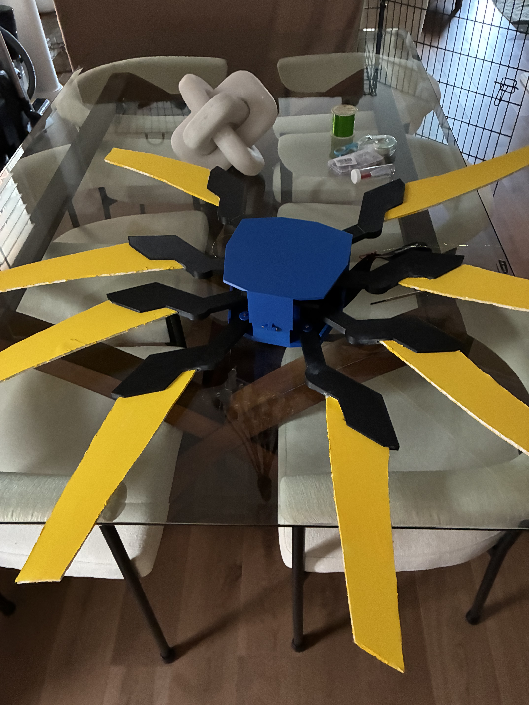

Wearable V1 Wings Replica
Wearable, mechanical, articulating wings based off the video-game character V1 from Ultrakill
- Manufactured 3D printed PLA parts, including a hinged backpack, pulleys, and 8 wings
- Designed with repairability in mind, using standard M4 screws and heat-set inserts to allow quick repairs
- Took into consideration print orientation and infill when printing, optimizing parts for strength and weight
- Calculated belt sizing and pulley ratios to create a 1:3 ratio of rotation between wings, and used CAD to visualize wing movement before manufacturing
